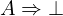
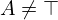
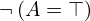

Show the Proof¶
In [1]:
import proveit
# Automation is not needed when only showing a stored proof:
proveit.defaults.automation = False # This will speed things up.
proveit.defaults.inline_pngs = False # Makes files smaller.
%show_proof
Out[1]:
| step type | requirements | statement | ||
|---|---|---|---|---|
| 0 | generalization | 1 | ⊢  | |
| 1 | instantiation | 2, 3 |  ⊢  | |
 : :  , ,  : :  | ||||
| 2 | theorem | ⊢  | ||
| proveit.logic.equality.fold_not_equals | ||||
| 3 | instantiation | 4, 5, 6 | ⊢  | |
:  | ||||
| 4 | axiom | ⊢  | ||
| proveit.logic.booleans.implication.denial_via_contradiction | ||||
| 5 | instantiation | 7 | ⊢ | |
| : , : | ||||
| 6 | deduction | 8 | ⊢  | |
| 7 | axiom | ⊢  | ||
| proveit.logic.equality.equality_in_bool | ||||
| 8 | modus ponens | 9, 10 | , ⊢  | |
| 9 | assumption | ⊢ | ||
| 10 | instantiation | 11, 12 | ⊢ | |
| : | ||||
| 11 | axiom | ⊢  | ||
| proveit.logic.booleans.eq_true_elim | ||||
| 12 | assumption | ⊢ | ||